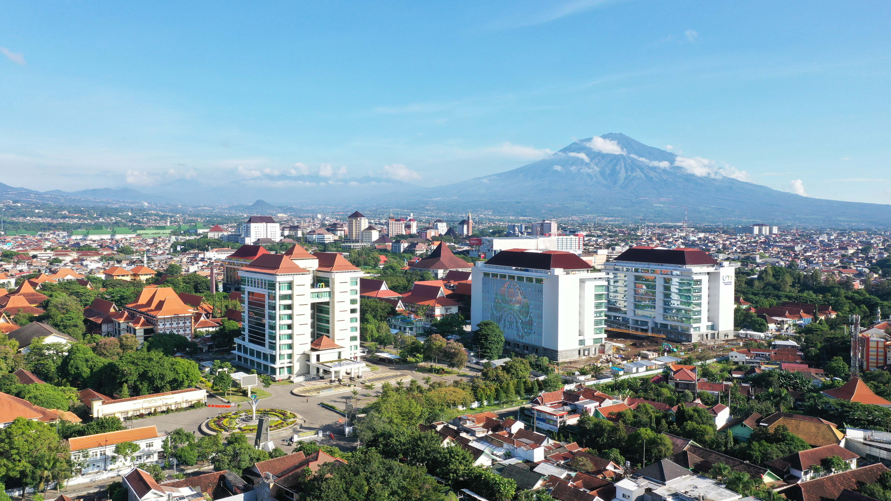

HOME
Knowldege base adalah suatu jenis basis data yang dipergunakan untuk manajemen pengetahuan. Basis data ini menyediakan fasilitas untuk koleksi, organisasi, dan pengambilan pengetahuan terkomputerisasi. Hal terpenting dari suatu basis pengetahuan adalah kualitas informasi yang dikandungnya.